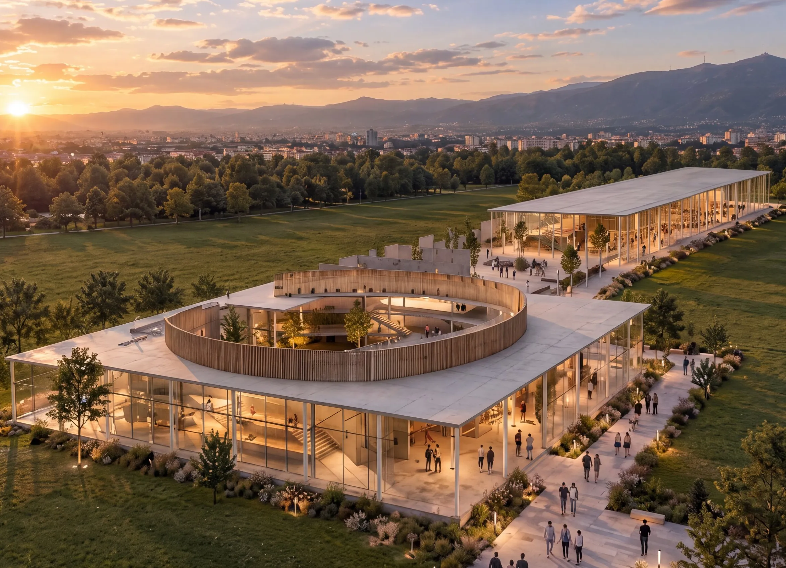
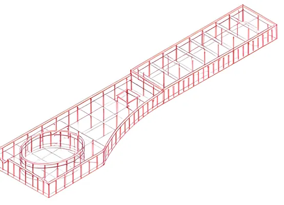
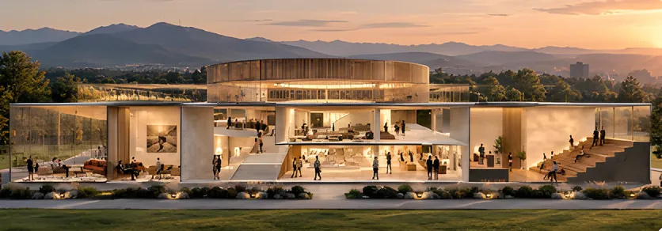
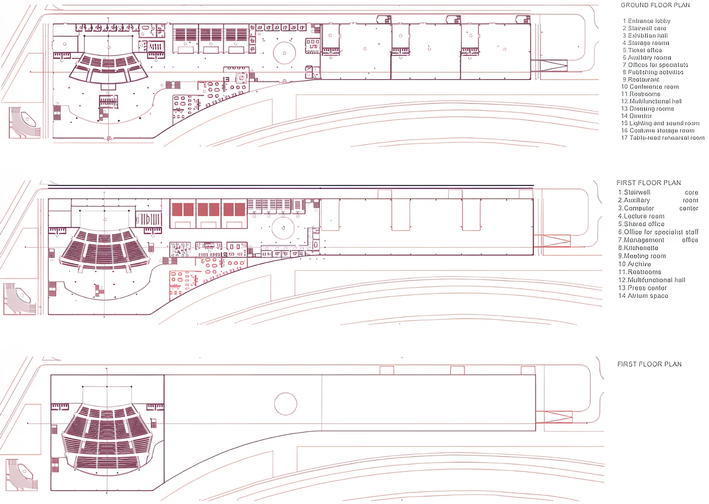
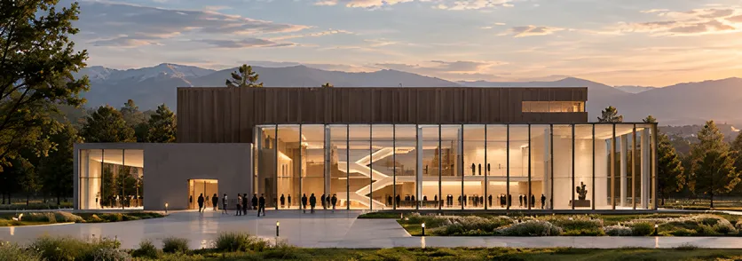

Aura Theatre
A theatre in a park: a long glass wing that ends in a round auditorium, all under one thin roof.

- Type
- Theatre and cultural centre
- Location
- Aerodrom, Skopje
- Status
- Conceptual design
Aura Theatre puts performance, architecture and landscape on one line. A long wing holds offices, rehearsal rooms and a press centre. At its end, a circular volume holds the auditorium and turns the whole plan toward the stage.
Broad flat roofs and slender columns make sheltered edges on every side. Glass façades open the public rooms to the park, so the foyer feels like part of the walk.
The seating is curved and stepped for clear sightlines. Roof, parapet and glazing are worked out down to the membrane.
Turn it around
Aura Theatre as a massing diagram: the glass pavilion, the curved neck, the long wing and the timber ring on the roof. Simplified from her plans, not to scale. Drag or use the arrow keys to turn it.






